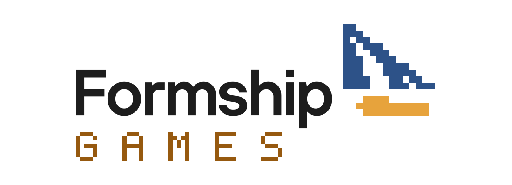

the parent, for reference
the parent, for referenceA sub-label, not a rebrand. Every direction reuses the parent's actual sail and hull geometry, its blue and gold, and its Inter wordmark; GAMES is outlined from JetBrains Mono 600, so nothing depends on installed fonts. Lockups keep the parent's 1100 by 400 viewBox so they drop straight into GamesLogo.vue. Icons are shown on white (canonical blue and gold file) and on #1b1b1b (white sail, as the parent's dark lockup does).
the parent, for referenceThe sail redrawn as a true 16 by 16 sprite: every cell lands on a whole pixel at 16px and 32px, so it is the crispest favicon of the four. The staircase hypotenuse, both slits and the stepped hull are still the parent's silhouette. GAMES is set in a matching 5 by 7 pixel face at the wordmark's cap height.
Risk. Pixel art says retro arcade, and Christian's games are painterly and hand-drawn, so the label would promise a style the catalogue doesn't deliver. The pixel GAMES also gets mushy at header size (56px tall).



The sail stands on a gold collar and a widened copy of the original hull, so the mark becomes a pawn on a pedestal, a tabletop piece. It fits the defense and tactics games best and keeps the parent's curves intact.
Risk. Without a slot or a perspective base, the silhouette reads more like a boat with an extra plank than a game piece, and adding either would push it toward fake 3D. It's the weakest concept at a glance.
The parent mark sits inside a cartridge outline with the chamfered top corner and label rule; in the lockup GAMES is stamped in a ruled box. It is the most obviously 'games' of the four and holds as a silhouette at 16px.
Risk. The frame shrinks the actual mark to about 60% so the Formship sail is the first detail lost at small sizes. Cartridges are also a nostalgia cue that dates the label and sits close to the gamepad cliché.
The mark is untouched except the hull bar, which is cut into four health segments with the last one spent. It is a dry, one-joke change that reads at 256 and 64, still shows as segments at 32, and falls back to the parent mark at 16. The lockup is the parent lockup plus GAMES tracked in mono gold, which is how a sub-label should behave.
Risk. The spent segment is the joke; some people will read the bar as a battery or a loading state rather than hit points. On white, the gold segments sit at low contrast, as the parent's gold hull already does.

D is the only direction where the Formship mark arrives whole, so the family read is instant and the parent loses nothing when the two sit side by side on formship.io. The game twist lives in a single element and is drawn with the parent's own geometry, with no new icon vocabulary, no retro style claim and no frame.
It also matches the work: tactical roguelikes and defense games run on health and attrition, and a bar with one segment already spent is the dry kind of joke Christian's taste allows. At 16px it degrades to the parent icon, which is the right failure. Exported as formship-games-icon.svg, formship-games-lockup-dark.svg and formship-games-lockup-light.svg.